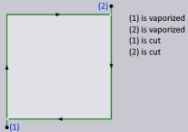

Laser CAM
Skärning
Det finns tre villkor som ligger till grund för skärningen av en plåt.

Choose cutting condition by – Denna inställning används för att definiera hur skärningsvillkoret ska väljas. Alternativen är Maximal segmentlängd, Genomsnittlig segmentlängd och Area.
Maximum segment length – Det längsta segmentet används som tröskelvärde.
Average segment length – Den genomsnittliga längden för alla segment beräknas och används som tröskelvärde. Standardinställning i TecZone Laser.
Area – Arean som omges av konturen används som tröskelvärde.
Switch to slower cutting condition when approach is constrained – Laserhuvudet byter till långsam skärhastighet när plåtens geometri för framkörningen är komplex.
Process for open polylines – När öppna polylinjer hittas i en del, beroende på vilket alternativ som är valt, kommer Cut att bearbeta polylinjen därefter. Alternativen inkluderar Skärning, Markera, Från och Baserat på skikt.
Från: Lasern ignorerar denna linje på delritningen.
Markera: Lasern markerar bara denna linje, dvs. ritar en synlig linje på plåten som inte tränger igenom.
Skärning: TecZone Laser väljer lämpliga laserförhållanden för denna polylinje och lasern skär den därefter.
| För att denna inställning ska gälla måste verktygen beräknas om. Ändringar av manuella verktyg åsidosätter alla ändringar som gjorts i denna inställning. Om den öppna polylinjen är manuellt inställd på ”markera” i den interaktiva layouten, kommer ändringen till ”Skär” i inställningarna inte att gälla. |
Cut/Mark open polylines backwards – Alternativet är att skära eller markera öppna polylinjer bakåt. Denna inställning gäller endast om skärning eller markering är inställd för processen för öppna polylinjer.
Mark forming footprint – När en försänkningssituation upptäcks av Cut flyttas den yttre cirkeln automatiskt till lagret Form footprint. Om detta alternativ är markerat kommer geometrin i lagret Form footprint att markeras.
Stitch cutting threshold distance (0=disable) – Detta alternativ används för att definiera det maximala avståndet mellan två skärningar som kommer att beaktas för stygnskärning.
Dynamics – Rullgardinsmenyn Dynamik innehåller Normal, Hög och Reducerad.
Pierce settings

Allow approach that is more than 0.5 distance to opposite side – Detta alternativ används för att definiera om en framkörning får täcka mer än avståndet till motsatt sida.
Corner Processing

Rounding tolerance (distance of corner from rounding tip) – Detta alternativ används för att definiera det maximala avståndet mellan hörn och avrundningsspets, som visas i bilden nedan. Avståndet mellan hörnet och rundningsspetsen är direkt proportionellt mot rundningsradien. Baserat på det värde som anges här väljer Cut rundningsradien inom intervallet min. och max. Om valet av den minsta radien inte ger ett avstånd inom toleransvärdet kommer rundning inte att tillämpas (looping eller kylning kan tillämpas).

Maximum distance of corner from outermost point on loop – Med detta alternativ definieras den maximala förlängningen av slingan från hörnet. Slingans förlängning är direkt proportionell mot radien. Vid ett skarpt hörn kommer slingning inte att tillämpas om valet av minsta radie inte ger ett avstånd som ligger inom det värde som anges här (rundning eller kylning kan fortfarande tillämpas).

TwinLine
Twinline processing strategy – Denna rullgardinsmeny används för att definiera vilken TwinLine-strategi som ska användas.Partwise – Skärningarna görs delvis. Lämpligt för tjocka plåtar där det inte finns någon risk för att konturerna tippar.Partwise-Safe – Skärningarna görs delvis, men förberedande skärningar görs i angränsande delar. Lämpligt för tunna plåtar där delar kan tippa.TIO (Twinline-Islands-Outer) – Twinline-kanter skärs först, följt av eventuella öar som skapats mellan delarna och sedan ytterkonturen.
Use TIO strategy of there are no islands Programvaran väljer alltid TIO (Twinline-Islands-Outer)-strategin om det inte finns några öar skapade i TwinLine-blocket. Detta alternativ är markerat som standard.
Scrap cutting

Scrap grid width – Detta är bredden på varje cell i rutnätet som skapas av verktyget. Värdet som anges här måste vara sådant att den resulterande kvadraten garanterat faller genom rastren oavsett dess position.
Approach length for separating cuts – Detta är den längd som önskas för framkörning vid skrotkapning.
Vaporization
Vaporize – Denna inställning styr om förångning måste göras eller inte. Och, om det måste göras, vilka delar av laserskärningsbanan som måste förångas.
None – Ingen förångning
Pierce – Endast instickspunkterna kommer att förångas Pierce & approach – Insticks- och framkörnings-delarna av laserskärningsbanan kommer att förångas.
Full laser path – Hela skärbanan, inklusive piercing, framkörning och kontur, kommer att förångas.
Pierce point vaporization circle radius – Om ett värde större än noll anges här kommer programvaran att flytta laserhuvudet i en liten cirkel runt instickspunkten med förångningslasern påslagen (cirkelformad förångning). Värdet avgör radien för denna cirkel. Om detta värde är noll kommer förångningslasern att slås på exakt ovanför instickspunkten och sedan omedelbart stängas av (punktförångning).
Vaporize marking – Detta alternativ används för att aktivera eller inaktivera förångning. Observera att lasermärkningar som etsats med TC_WRITE-makrot aldrig förångas.När dessa inställningar ändras sker ingen synlig förändring i skärsnittstället förutom att NC-kodikonen återaktiveras om den tidigare var inaktiverad.Detta beror på att dessa inställningar påverkar kodgenereringen. Genererad förångningskod för olika skärningar beskrivs i tabellen nedan.
| Skärning | Beteende |
|---|---|
Laser Cut |
Detta är det vanliga skärobjektet för att skära en kontur på delen.  Om Vaporize =Pierce & approach, förångas endast piercingpunkten och inflygningsbanan först och omedelbart därefter kommer laserhuvudet att ompositioneras över piercingpunkten och påbörja den faktiska skärningen. För detta förångningsalternativ och för Vaporize = Pierce förångas piercing och framkörning alltid strax före skärningen. Denna typ av förångningssekvens kallas skärningsvis, eftersom varje skuren bit förångas innan den skärs.Beteende för Vaporize =Pierce är som ovan, förutom att endast instickspunkterna vaporiseras.Om Vaporize =None sker ingen förändring i den genererade koden. |
Scrap Cut |
Om Vaporize = Full laser path blir vaporiserings- och skärsekvensen följande: - Konturen tillsammans med dess piercing och framkörning förångas. - Skrotgallret skärs. - Konturen skärs.Således förångas både gallret och konturen och skärs sedan.Om Vaporize = Pierce & approach eller Pierce förångas piercing- och framkörningssegmenten för skrot och kontur precis innan de skärs. |
Sheet Cut |
En skärning av plåt kommer alltid att förångas precis innan den skärs. |
FlyLine Cut |
Dessa skärningar förångas aldrig, oavsett inställningarna för förångning. |
Point Cut |
Denna kommer att förångas precis innan den skärs. |
Lasermärkning

Regler för att lägga till en eller flera textmärkningar på delen kan definieras i Settings → Cut CAM → Laser CAM → Laser marking.I tabellen nedan kan användaren lägga till flera regler, där varje regel leder till placering av en enda textrad.

| Kolumn | Beskrivning |
|---|---|
Kryssruta |
Du kan aktivera eller inaktivera en regel med hjälp av kryssrutan i den första kolumnen. |
Text |
Texten som måste infogas på delen. Denna text kan innehålla följande token som ersätts med motsvarande värde från delinformationen. Dessa token är inte skiftlägeskänsliga.$PARTNAME – Namnet på delen.$FILENAME – Namnet på FX-filen.$ROOTFILE – Namnet på den ursprungliga CAD-filen.$PARTID – ID-nummer, delar.$CUSTOMER – Kund.$AUTHOR – Författare.$JOBNUMBER – Jobbnummer från Del→Info.Dessa variabler anges i ett verktygstips. |
Height |
Detta är teckenhöjden (från baslinjen till uppstigningslinjen) i mm eller tum. När du infogar denna text kan det hända att det inte finns tillräckligt med utrymme för att infoga texten med den angivna teckenhöjden.I sådana situationer kommer TecZone Laser automatiskt att minska textstorleken i steg om 10 % tills det är möjligt att placera den. Denna minskning är för närvarande tillåten upp till 2 mm.Minimum har ställts in på 2 mm. |
Orientation |
Denna kolumn bestämmer textens orientering.Följande värden är möjliga: Horizontal – Texten blir horisontell.Vertical – Texten blir vertikal.Along longer side: Texten justeras efter delens långsida. Om delen är liggande blir texten horisontell och om delen är stående blir texten vertikal.Along shorter side: Texten justeras efter delens kortsida (motsatsen till ovanstående). När du lägger till två texter till delen kan detta och det föregående alternativet användas tillsammans för att minimera risken för överlappande text.Along longest segment: Texten kommer att justeras efter det längsta linjära segmentet av ytterkonturen. I detta fall kanske texten inte är axeljusterad. Oavsett om texten placeras horisontellt, vertikalt eller snett, kommer TecZone Laser alltid att orientera texten så att användaren ser texten i rätt riktning när hen tittar på delen från den sida som är närmast texten. Det vill säga, horisontell text placerad längst ner i mitten kommer att löpa från vänster till höger och när den placeras längst upp i mitten kommer den att löpa från höger till vänster. |
Horizontal pos |
Horisontell justering av text. Möjliga värden är center, left och right. Denna inställning är inte relevant om Along longest segment väljs som önskad orientering. |
Vertical pos |
Vertikal justering av text. Möjliga värden är center, bottom och top. Denna inställning är inte relevant om Along longest segment väljs som önskad orientering. |
När dessa markeringar läggs till säkerställer TecZone Laser alltid att den tillagda texten inte kolliderar med någon delkontur. För mycket små delar eller delar med lite fritt utrymme minskar den automatiskt teckenstorleken med den mängd som krävs för att texten ska passa in i delen och hålla sig borta från eventuella hål.